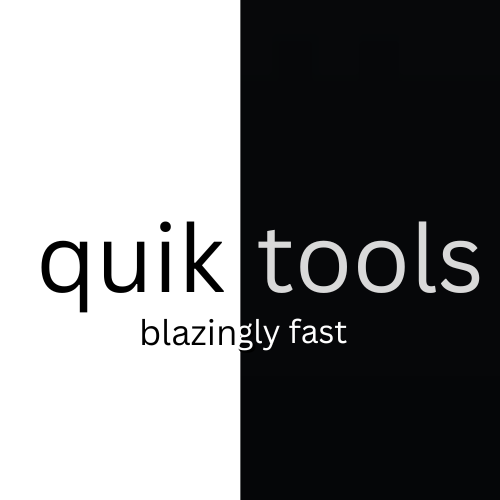

Introducing quiktools
The number one way to write powerful code, for powerful programming languages, quickly.
quiktools is the only way you can write code and deliver on time and with performance expectations surpassed in more ways than you can imagine.
With quiktools, you can write up to 20% less code* and have up to 15% better performance*.
Does this really exist?
Yep, well, with a catch, this is still in development, and don't worry, this is not just a out-of-touch vision, this is something that we can recreate, so leave it up to us, to make your code, better than ever before.
* Numbers may not be fully accurate, do not take as a fact.
Credits: noerlol - Website, Library Idea, CoreQT | combogang - CoreQT
 quiktools - blazingly fast